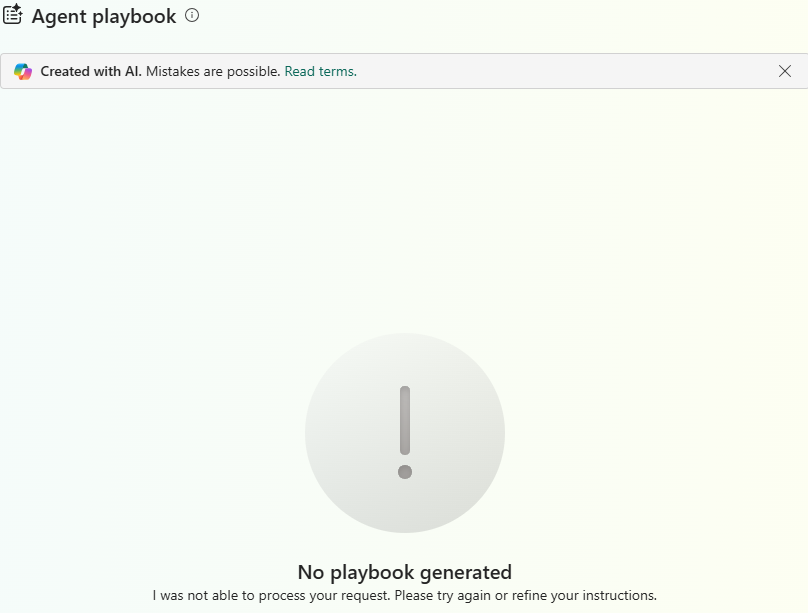

Watch a fleet live, score its risk, and let an agent answer for it
Follow along and you will build a working live-logistics platform: an Eventstream landing GPS and scan events, an entire Silver+Gold transformation layer built from eight declarative views instead of Spark notebooks, a leakage-controlled model scoring every shipment's late-delivery risk, and an Ontology-bound agent answering ops questions from the same tables the report reads. No prior Fabric experience assumed, and nothing to buy.
Why anyone builds this
VeloTrack is a parcel-logistics operator: it owns the vehicles and the depots, not the warehouse the parcel started in. Three things go wrong constantly, and all three are usually found too late to do anything about them.
| The problem | How it usually gets found |
|---|---|
| A route quietly running late all day | The next-morning ops report |
| A depot backing up | A driver calling in, hours into the shift |
| A shipment that is going to miss its promise | The customer's own tracking page, before anyone internal knows |
What you are building
Ten Fabric items. The unusual thing about the shape, like the earlier projects in this series, is what is missing from it — see the full architecture page for the picture.
| Item | Its job |
|---|---|
| Eventstream | Multiplexes GPS pings and depot scan events into OneLake, live |
Lakehouse (LH_VeloTrack) | Bronze landing from the Eventstream, schema-enabled |
| Materialized Lake Views ×8 | The transformation layer — 3 Silver + 5 Gold, replacing Bronze/Silver/Gold notebooks entirely |
| ML Model + scoring notebook | Late-delivery risk, cohorted and leakage-controlled |
| Direct Lake semantic model | 4 tables, 29 measures, reading Gold with no import, no refresh |
| Ontology | Entity types bound live to the Gold schema |
| OperationsAgent | Substituted for a Data Agent killed on capacity SKU — answers ops questions grounded in the model |
| Power BI report ×5 pages | 4 content pages plus an auto-generated guide page |
| Variable Library | Every environment-specific value reads from here, not a hardcoded string |
| Git integration | Every item definition on disk as you build it |
Get the code
Everything the steps below tell you to run is in one public repository, MIT licensed, no sign-up. Get it before step 2 — that is the step that needs it.
git clone https://github.com/BIVenture2025/velotrack-live-logistics-fabric.git cd velotrack-live-logistics-fabric pip install -r notebooks/requirements.txt # if present — else see notebooks/GENERATOR_SPEC.md §8
| Folder | What is in it |
|---|---|
notebooks/ | The 11-module event generator — seeded, versioned, byte-reproducible — plus the two notebooks in the whole build |
mlv/ | The entire transformation layer, one file, declarative SQL |
model/ | The semantic model's own .tmdl, pulled live from the running service |
tests/ | The fake-Spark harness that caught real defects before the tenant did |
docs/ | Architecture, outcome contract, post-mortem, plan-versus-actual, cost — and this guide |
notebooks/generator/run.py builds the estate, mlv/P26_MLV_LAYER.sql is the entire transformation layer, and notebooks/NB_P26_Score_Late_Risk.ipynb is the part that makes this more than a dashboard.Set up the workspace, capacity and Git — before you build anything
Everything lives in one Fabric workspace attached to a trial capacity, with Git integration connected from the very start.
- Sign in at app.fabric.microsoft.com with your work or school account and start (or confirm) your Fabric trial.
- Workspaces → New workspace. Call it something like
VeloTrack-Dev, and under Advanced set the licence mode to your trial capacity. - On GitHub, create a new, private repository for the raw estate — this project used
velotrack-fabric-estate— initialised with a README (Fabric will not connect to a repo with zero branches), then create a working branch offmain. - Workspace settings → Git integration → connect it to that repository, that branch, and a subfolder (not the repo root) so notebooks and docs can live beside the synced item definitions without Fabric trying to manage them too.
Git integration can silently refuse to connect from inside a coding-agent session
Generate the fleet, the shipments, and the events
A logistics platform needs shipments moving. This build generates its own: about 120 vehicles across 8 depots and 15 routes, 25,000 shipments over a 30-day window, and roughly 3.4 million GPS pings replayed to look live.
Clone the repo (see Get the code), then:
pip install -r notebooks/requirements.txt # if present — else see GENERATOR_SPEC.md §8 python -m generator.run --seed <your-seed> --out ./output
The generator's dirty-data layer is deliberate: duplicate scan events and out-of-order GPS pings, so the transformation layer's dedupe and ordering logic is real work, not decoration.
A generator can pass every unit check offline and still be wrong in aggregate
Create the Eventstream and the Bronze lakehouse
An Eventstream takes the GPS-ping and depot-scan feed and lands it, live, in
a Lakehouse — this build's LH_VeloTrack.
- New item → Eventstream. One stream, multiplexing GPS pings and scan events.
- New item → Lakehouse, schema-enabled, with a
bronzeschema created explicitly before the first load — Fabric does not create it for you on an empty rebuild. - Point the Eventstream's destination at the Lakehouse and start it; then run the backfill notebook for history.
Build the transformation layer as Materialized Lake Views — no orchestrated Spark ETL
This is the step that makes the build different. Instead of Bronze→Silver→Gold
notebooks, the transformation is declarative SQL: CREATE MATERIALIZED VIEW ... AS
SELECT, maintained by the engine.
- Author the view definitions in one file, in dependency order — Silver views first (dedupe, ordering), then Gold (the shipment/route/depot feature tables the model and the scoring notebook both read).
- Deploy and confirm: 8 views, 3 Silver + 5 Gold, all live on the first full run.
An MLV is a tagged Delta table, not a naming convention
default.-prefixed four-part name on save. Count views by their xCatalogTableType = MATERIALIZED_LAKE_VIEW tag, never by what you named them — the name you gave a view is not reliably what comes back on read-back.A probe's own verdict can be the defect, not the capability
b→r, +→-, 2→z) that a naive scan would miss entirely. Author definitions to a file and deploy through a file-based channel; never hand-transcribe a payload of any real size through a chat-style tool call.Score late-delivery risk — leakage-controlled, cohorted
One notebook reads the Gold shipment-features table, trains on a strict split, and
writes gold.shipment_risk_scores — one row per shipment, a risk score and a band.
Code that has never executed anywhere needs to meet a fake of the interface it touches first
ValueError: Input X contains NaN — from a COALESCE inconsistency in the MLV layer that a fake-Spark test harness would have caught in minutes. It did catch it, the second time it was tried: a small harness that fakes the ONE interface a notebook cell touches is cheap to write and finds real defects before the tenant does. See tests/fake_spark.py in this repository.Build the Direct Lake semantic model — measures via XMLA, never portal-typed
Four Direct Lake tables read the Gold schema directly: no import, no refresh, no
Gold-beneath-Gold layer. Every measure is added over XMLA/TOM after the shell is created — never
typed by hand in the portal, so the model itself is the source of truth and can be pulled back out
as .tmdl on demand (see model/ in this repository).
gold.shipment_features -> shipment_features (12 measures) gold.route_performance -> route_performance (4 measures) gold.depot_throughput -> depot_throughput (3 measures) gold.shipment_risk_scores -> shipment_risk_scores (9 measures)
A brand-new Direct Lake connection can time out on its first several attempts
ConnectFabric failing 7 of 7 times, roughly 60 seconds each — about half an hour lost before the shell finally connected. If this happens to you, it is very likely transient service-side state, not a configuration mistake; keep the retry loop tight and move on to other work if it needs a session boundary to clear.powerbi-report-author validate CLI at 0 errors before you build the report on top.Bind the Ontology, stand up the agent layer, and build the report
An Ontology binds entity types to the live Gold schema; an agent — originally planned as a Data Agent — answers scripted ops questions grounded in the same model; a five-page Power BI report (four content pages plus an auto-generated guide page) reads the model directly.
UnsupportedCapacitySKU: FTL64 SKU Not Supported, confirmed against a working item type (AISkill returned a different, generic error) so the failure could be pinned on the SKU specifically rather than guessed at. An OperationsAgent substituted in the same session, at zero build cost, because the kill criterion had been written down before the build started.
Deploy from Git, verify by query, and publish
The estate's job in this project is to prove itself as its own CI/CD demo: item definitions on disk, deployed from the Git-integrated folder, verified by querying the live service rather than by reading a screenshot.
- Commit every item definition to the estate's Git branch as you build it — not as a batch at the end.
- Deploy via whichever channel actually reaches your tenant. This build's intended channel
(
deploy_items.py/fab, viaaz login) needs outbound network access from wherever you run it; if that access is not available, Fabric Core MCP is the fallback, with definitions kept small enough to deploy inline (see the ~8 KB warning in step 4). - Verify every claim by query: item counts via
list_items, row counts via a direct query against the Lakehouse or the model, never by re-reading a portal screenshot for a number a query would answer.
list_items/get_item against the workspace, not trusted on say-so.Every trap, in one table
Each of these cost real time on the original build, and most are not in the documentation. Worth skimming before you start.
| What happens | What you will see | What to do |
|---|---|---|
| Fabric trial needs a work account | Sign-up simply refuses | Nothing to debug — get a work or school account |
| The trial's expiry has no queryable field | list_capacities confirms Active but no expiry date | Re-read the portal banner every session; do not trust a once-read date |
| A probe's own SQL bug can look like a platform limit | A capability probe returns a hard FAIL | Run a negative control that reproduces the failure on demand before believing the probe |
| An MLV's saved name is not what comes back on read-back | Fabric rewrites it to a default.-prefixed four-part name | Count views by the xCatalogTableType tag, not by the name you gave them |
| Hand-typed deploy payloads above ~8 KB corrupt silently | Valid base64, wrong bytes — b→r, +→-, 2→z, all ASCII-safe | Author to a file, deploy via a file-based channel; never hand-transcribe above a few KB |
| A generator can pass every unit check and still be wrong in aggregate | Episode attribution measured 9.7%/90.3% against a 65–75% target | Recalibrate injection intensity via a sweep; never tune the threshold to the injection |
| Code untested against any fake of its interface meets the tenant instead | ValueError: Input X contains NaN, first real run | A small fake-Spark harness for the one interface a cell touches catches this before deploy |
| A new Direct Lake shell can time out repeatedly on first connect | ConnectFabric failing 7/7, ~60s each | Likely transient service state — keep the retry tight, switch tasks if it needs a session boundary |
| A capacity-SKU rejection can look identical to a config mistake | Generic errors from two different agent item types | Control-test against a working item type on the same capacity before concluding it is the SKU |
| A plausible platform-gate explanation should be tested, not written down | "Gated by trial capacity" was the first guess, and it was wrong | Test the specific claim before it becomes the closure record's official reason |
| An agent-config surface can be opaque to every capture tool at once | No accessibility-tree read, no network/console capture, either | Record the blocker as unexplained rather than forcing a diagnosis the tools cannot support |
| A live-replay leg can post cleanly and never reach its destination table | Stream monitor confirms delivery; the destination table shows no new rows | Reconcile against the stream's own delivery metrics AND a direct table count, not either alone |
What this build does not do
Stated plainly, so nothing here oversells itself. A reviewer would find all of these in ten minutes; it is cheaper to say them.
- The live-replay leg of the Eventstream→Bronze path was never reconciled. 324,854 events posted cleanly, the Eventstream's own monitor confirmed receipt and forward, and Bronze never showed them. Four independent checks pointed at the write path itself; none diagnosed it. Recorded as an open defect, not reinterpreted as a pass.
- The OperationsAgent's
Generate playbookaction fails reproducibly (3/3) for an undiagnosed reason. The 5 scripted ops questions it was meant to answer ARE answered correctly — DAX-verified against the model directly — but the agent action itself does not work, and the agent-config surface is opaque to every capture tool this project had. - The real-tenant model AUC was never retrieved. Only an offline proxy (0.9763) is documented.
- The project's own central question could not be answered. Whether authoring definitions offline and deploying via a file-based channel is actually faster than the previous project's build — the channel that question depends on was never reachable from any session's tooling, so the question was never actually tested, only asked.
- The data is invented. VeloTrack Logistics is fictional. The shape is realistic; no figure represents a real fleet, shipment, driver or depot, and every injected element — including the late-delivery episodes used to test the scoring model — is declared in GENERATOR_SPEC.md.
- Trial capacity only, on a 20-day Fabric trial. Nothing here says what this would cost to run in production.
Generate playbook failure — I would genuinely like to hear about it.